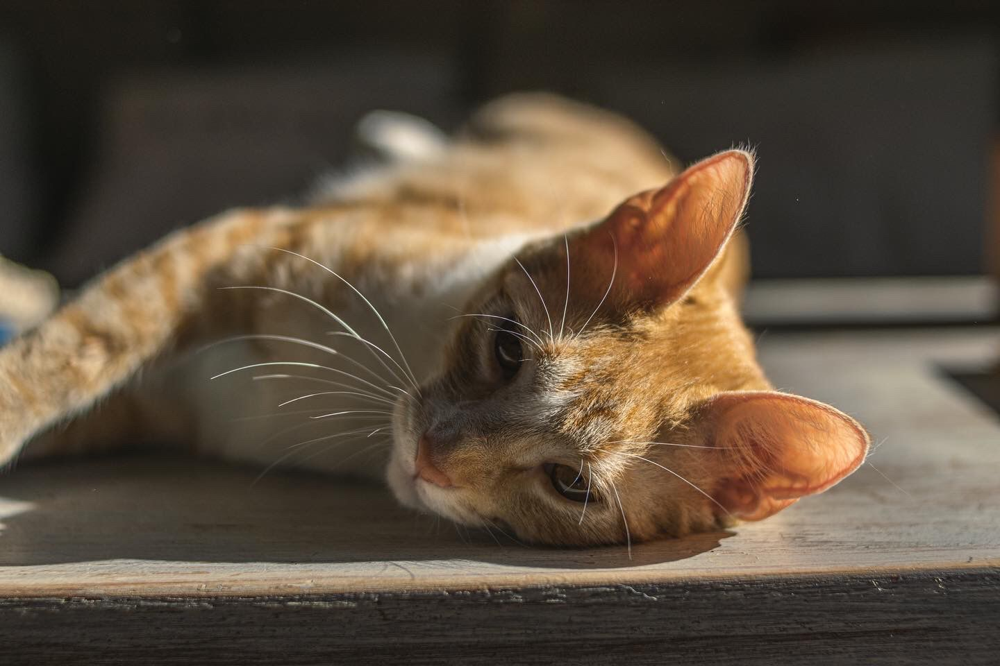
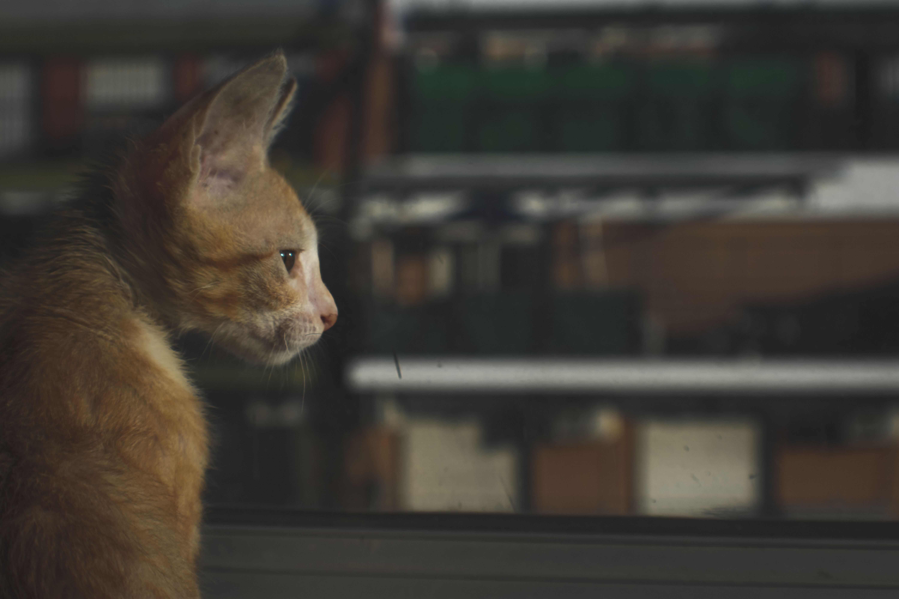

Quienes somos
Somos una organización que rescata gatos callejeros, recibe gatos encontrados y los redirecciona a su hogar. Tenemos voluntarios muchas partes de Buenos Aires rescatando animales, de todas las edades y tamaños, con discapacidades y maltratados en muchas ocaciones. Por esto es fundamental econtrarle a nuestros amigos gatunos su refugio seguro y calentito.
- ¿Como funciona Kittens?
- A travez de nuestro website, conectamos gatitos en sitación de calle, con sus futuros dueños, completando el formulario y viniendolos a buscar a cualquiera de nuestras sucursales.
- ¿Qué nos hace especiales?
- Nos hace especiales la inmediatez con la que llevamos a cabo el proceso, las conficiones óptimas en las que entregamos al gato y nuestro trabajo por rescatar la mayor cantidad de animalitos posibles.
- Condiciones en las que recibirás tu kitten
- Recibirás a tu gato desparacitado, vacunado y con su primer bolsa de comida según la necesidad de cada uno. También de ser necesario un remedio, se puede hablar para que se cubra la primera dosis
- Qué tenes que llevar a la hora de ir a buscar tu gatito
- Una mantita o algún lugar donde llevar al gato calentito y tu dni. No se debería abonar ninguna de las cosas mencionadas anteriormente. Y último no menos importante, mucho amor y paz para darle a tu nuevo compañero/a.

